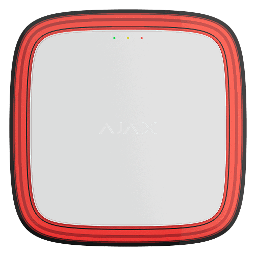
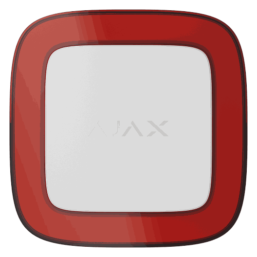

Catalogue
Incendie
Ligne professionnelle Ajax EN54 : centrale, détecteurs, déclencheurs et diffuseurs. Les FireProtect du logement sont dans l’alarme intrusion.
18 références






Aucune référence ne correspond à ces critères.
Besoin d’aide pour composer votre système ?
Étude gratuite · Partenaire agréé · Toute l’île · Intervention sur site.